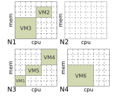

BtrPlace is a virtual machines scheduler for hosting platforms. You can specialize it safely through independant constraints to make it support your expectations.
BtrPlace is a complete rewrite of the reconfiguration algorithm that was inside OW2 project Entropy with a clear focus on extensibility. It embeds the constraint programming library Choco to compute solutions.
BtrPlace is developed using Jetbrains Intellij and JProfiler. YourKit is also supporting BtrPlace with its full-featured Java Profiler.


Model model = 
Create a Model that represents the current infrastructure, the node and VMs state, the placement, the resource allocation, ...
spread(VM[2..3]); preserve(VM1, "cpu", 3); offline(@N4);
Express your expectations using constraints (here, through btrpsl): VM2 and VM3 must run on distinct nodes. 3 vCPU resources must allocated to VM1. N4 must be offline.
Set<SatConstraint> constraints = ... Scheduler s = new DefaultChocoScheduler(); ReconfigurationPlan plan = cra.solve(model, constraints); = plan.getResultingModel();
Use BtrPlace to compute a reconfiguration plan to reach a model satisfying your constraints: And voilà ! Plan contains the schedule of actions to reach a new viable model according to the stated constraints and the actions semantic.
The complete tutorial is available here. Don't forget BtrPlace is meant for being flexible. So document yourself, and develop your own constraints or optimization objectives.
BtrPlace is developed by Scale, a joint team between I3S (Univ. of Nice Sophia-Antipolis and CNRS) and INRIA Sophia Antipolis méditerrannée.
BtrPlace is a research project initiated in 2006 as a part of Entropy. Here is the meaningful publications related to entropy then BtrPlace in chronological order.
Higher SLA Satisfaction in Datacenters with Continuous VM Placement Constraints. Huynh Tu Dang, and Fabien Hermenier. 9th Workshop on Hot topics in Dependable Systems (HotDep 2013). Farmington, USA. ACM.
This paper reveals we suck at developing constraints. Developers usually omit to consider the temporary states of the datacenter during the reconfiguration process. Sadly constraints can be temporary violated silently during this period. In our defense, it is very hard to imagine these silly situations. On the bright side, BtrPlace is supposed to be flexible, so we propose continuous constraints and implement them inside BtrPlace to fix that shamy situation.
BtrPlace: A Flexible Consolidation Manager for Highly Available Applications. Fabien Hermenier, Julia Lawall, and Gilles Muller. IEEE Transactions of Dependable and Secure Computing (TDSC), vol 10, no. 5, pp. 273--286, Sept.-Oct. 2013.
The cursed paper. Since 2009, I tried to write a good paper about the practical interests of flexible VM manager with BtrPlace as the visible part of the iceberg. After tons of rejections, and even more tons of improvements, I still don't know if the paper is good but it finally passes the wall with an acceptance notification receiving during X-mas 2012. Oh oh oh.
An energy aware framework for virtual machine placement in cloud federated data centres. Corentin Dupont, Thomas Schulze, Giovanni Giuliani, Andrey Somov, and Fabien Hermenier. In Proceedings of the 3rd International Conference on Future Energy Systems: Where Energy, Computing and Communication Meet (e-Energy '12). ACM, New York, USA.
This work started by a message on the forum of the Choco Constraint Programming Solver. This paper was the first result of a cooperation with the consortium of the Fit4Green FP7 project. It proposes a flexible placement algorithm to address energy efficiency at fine grain.
Bin repacking scheduling in virtualized datacenters. Fabien Hermenier, Sophie Demassey, and Xavier Lorca. In Proceedings of the 17th international conference on Principles and practice of constraint programming (CP'11). Springer-Verlag, Berlin, Heidelberg, pages 27-41.
This paper results from a collaboration with scientists from the Constraint Programming community.
It exposes the theoretical aspects of what will be called BtrPlace.
We argues for a composable reconfiguration algorithm that handle simultaneously the VMs placement
and the schedule of the reconfiguration actions. We then propose a Constraint Programing model
to make it extensible through additional placement constraints.
For the final version of the paper, we planned to reveal several improvments that speed up the resolution process
and improve the quality of the computed solutions. Sadly, we went out of time so the new experiments where written
in a separate document called Bin Repacking Scheduling in Virtualized Datacenters
- Back to Work -.
Dynamic Consolidation of Highly-Available Web Applications. Fabien Hermenier, Julia Lawall, Jean-Marc Menaud, Gilles Muller. INRIA Research Report RR-7545. 2011.
Well this paper is only a research report. But it is at the source of Btrplace. It reveals the practical interest for a customizable reconfiguration algorithm. Here, the use case consists in placing VMs with regards to fault-tolerance and performance concerns in a consolidated environment.
Cluster-wide Context Switch of Virtualized Jobs. Fabien Hermenier, Adrien Lèbre, and Jean-Marc Menaud. Proceeding of the international workshop Virtualization Techniques for Distributed Computing (VTDC'10), with the 19th ACM International Symposium on High Performance Distributed Computing (HPDC'10). ACM, New York, pages 658-666.
This paper generalizes the principles of Entropy by using it to ease the development of VM scheduler. The developer indicates only the state of VMs for the next round while Entropy manages the VMs accordingly using live-migration or pre-emption.
Entropy: a consolidation manager for clusters. Fabien Hermenier, Xavier Lorca, Jean-Marc Menaud, Gilles Muller, and Julia Lawall. 21th Proceedings of the 2009 ACM SIGPLAN/SIGOPS international conference on Virtual execution environments (VEE '09). ACM, New York, NY, USA, pages 41-50.
This paper is the fundaments paper about Entropy. It reveals the need to schedule reconfiguration actions to resolve dependencies and proposes to evaluate their cost to reduce it to a minimum. It finally demonstrates the practical interest of Constraint Programming to compute good schedules that can be applied fast.
Gestion dynamique des tâches dans les grappes, une approche à base de machines virtuelles. Fabien Hermenier. Phd. dissertation defended in nov. 2009. University of Nantes.
My Phd. thesis is only available in french. In english, it would be entitled "Online Management of Jobs in Clusters using Virtual Machines". A 1-page abstract is however available in english.